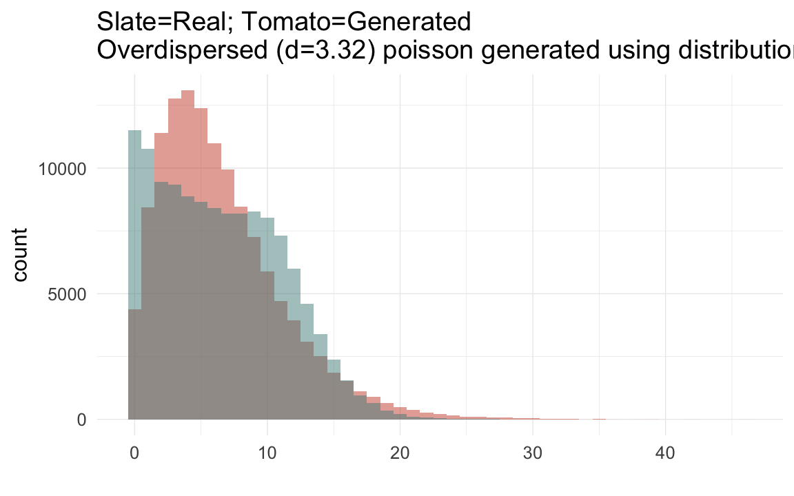
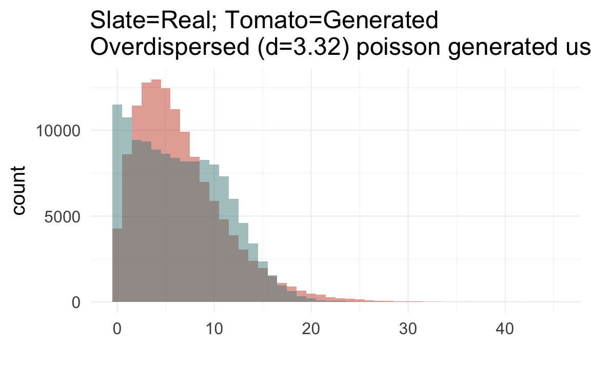

RPQA Quebec descriptives
Loading details
library(car); library(ggplot2); library(lubridate); library(stringr); library(reshape2); library(data.table); library(dplyr); library(knitr); library(formr); library(pander); library(grid)
source("0__helpers.R")
opts_chunk$set(render = pander_handler, cache=TRUE,tidy=FALSE,autodep=TRUE,dev='png',fig.width=12,fig.height=7.5)
load("rpqa.rdata")
desc_theme = theme_minimal(base_size = 24) + theme( axis.line.y = element_blank(), axis.line.x = element_line(size = 1, color ="black"))
update_geom_defaults("bar", list(fill = "#6c92b2", alpha = 1/2))
demo_trends = aggDemoTrends(rpqa)
mymin = theme_minimal() +theme(panel.grid.major.y =element_blank(),panel.grid.major.x = element_line(colour="#eeeeee"))
rpqa[, paternalage := 10 * paternalage]
rpqa[, maternalage := 10 * maternalage]
rpqa[, age := 10 * age]
rpqa[, age_at_1st_child := 10 * age_at_1st_child]
rpqa[, age_at_last_child := 10 * age_at_last_child]
rpqa[, byear := year(bdate)]
rpqa.1[, paternalage := 10 * paternalage]
rpqa.1[, maternalage := 10 * maternalage]
rpqa.1[, age := 10 * age]
rpqa.1[, age_at_1st_child := 10 * age_at_1st_child]
rpqa.1[, age_at_last_child := 10 * age_at_last_child]
rpqa.1[, byear := year(bdate)]Variable descriptives
The following statistics refer to all births. This means that e.g. the percentage of ever married people includes some who died before they had a chance at marriage.
Whole population (N = 459591)
descriptives = psych::describe(rpqa[, list(
paternalage, maternalage, nr.siblings, dependent_sibs_f5y, age, spouses, children, grandchildren, byear, byear.Father, age_at_1st_child, age_at_last_child )])
round(data.frame(descriptives)[,2:12],2)| n | mean | sd | median | trimmed | mad | min | max | range | skew | kurtosis | |
|---|---|---|---|---|---|---|---|---|---|---|---|
| paternalage | 396965 | 35.64 | 8.43 | 34.53 | 35.05 | 8.54 | 14.84 | 85.44 | 70.61 | 0.7 | 0.43 |
| maternalage | 399603 | 29.71 | 6.64 | 29.2 | 29.5 | 7.49 | 9.95 | 69.27 | 59.32 | 0.25 | -0.71 |
| nr.siblings | 427790 | 7.92 | 4.14 | 8 | 7.91 | 4.45 | 0 | 22 | 22 | 0.03 | -0.53 |
| dependent_sibs_f5y | 459591 | 2020 | 7442 | 3 | 2.93 | 1.48 | 0 | 30905 | 30905 | 3.46 | 10.1 |
| age | 239638 | 25.48 | 31.29 | 3.19 | 21.56 | 4.72 | -0.36 | 112.1 | 112.5 | 0.76 | -1.08 |
| spouses | 459591 | 0.32 | 0.55 | 0 | 0.22 | 0 | 0 | 6 | 6 | 1.73 | 3.08 |
| children | 459591 | 1.86 | 3.79 | 0 | 0.86 | 0 | 0 | 31 | 31 | 2.19 | 4.13 |
| grandchildren | 459591 | 3.56 | 12.25 | 0 | 0.34 | 0 | 0 | 195 | 195 | 4.81 | 27.45 |
| byear | 427685 | 1761 | 33.64 | 1770 | 1765 | 29.65 | 1583 | 1799 | 216 | -1.28 | 1.56 |
| byear.Father | 401758 | 1728 | 31.89 | 1735 | 1731 | 28.17 | 1583 | 1782 | 199 | -1.03 | 0.74 |
| age_at_1st_child | 110119 | 25.36 | 5.64 | 24.47 | 24.8 | 4.87 | 9.95 | 81.2 | 71.25 | 1.35 | 3.83 |
| age_at_last_child | 110119 | 37.5 | 9.14 | 38.1 | 37.33 | 8.98 | 13.84 | 85.44 | 71.6 | 0.24 | 0.16 |
describeBin(rpqa[, list(survive1y, surviveR, ever_married, paternalloss, maternalloss)])| n | mean | sd | |
|---|---|---|---|
| survive1y | 303094 | 0.68 | 0.22 |
| surviveR | 303094 | 0.55 | 0.25 |
| ever_married | 459591 | 0.28 | 0.2 |
| paternalloss | 323916 | 0.05 | 0.05 |
| maternalloss | 316040 | 0.08 | 0.07 |
included sample (N = 107099)
descriptives = psych::describe(rpqa.1[, list(
paternalage, maternalage, nr.siblings, dependent_sibs_f5y, age, spouses, children, grandchildren, byear, byear.Father, age_at_1st_child, age_at_last_child )])
round(data.frame(descriptives)[,2:12],2)| n | mean | sd | median | trimmed | mad | min | max | range | skew | kurtosis | |
|---|---|---|---|---|---|---|---|---|---|---|---|
| paternalage | 107099 | 36.28 | 8.48 | 35.2 | 35.7 | 8.64 | 16.57 | 81.18 | 64.62 | 0.65 | 0.26 |
| maternalage | 106006 | 29.58 | 6.66 | 29.04 | 29.37 | 7.5 | 13.01 | 53.03 | 40.02 | 0.25 | -0.72 |
| nr.siblings | 107099 | 8.74 | 3.72 | 9 | 8.79 | 4.45 | 0 | 22 | 22 | -0.07 | -0.27 |
| dependent_sibs_f5y | 107099 | 2.99 | 1.44 | 3 | 2.97 | 1.48 | 0 | 9 | 9 | 0.15 | -0.13 |
| age | 91015 | 38.75 | 31.86 | 39.99 | 37.87 | 49.94 | 0 | 108.3 | 108.3 | 0.03 | -1.58 |
| spouses | 107099 | 0.64 | 0.7 | 1 | 0.53 | 1.48 | 0 | 6 | 6 | 0.9 | 0.79 |
| children | 107099 | 4.32 | 5.35 | 0 | 3.54 | 0 | 0 | 31 | 31 | 0.88 | -0.45 |
| grandchildren | 107099 | 10.78 | 19.92 | 0 | 5.86 | 0 | 0 | 191 | 191 | 2.38 | 6.2 |
| byear | 107099 | 1724 | 20.68 | 1729 | 1726 | 20.76 | 1670 | 1750 | 80 | -0.79 | -0.3 |
| byear.Father | 107099 | 1688 | 22.94 | 1693 | 1690 | 22.24 | 1599 | 1731 | 132 | -0.67 | -0.33 |
| age_at_1st_child | 52402 | 25.58 | 5.47 | 24.77 | 25.08 | 4.81 | 13.73 | 71.92 | 58.19 | 1.22 | 3.07 |
| age_at_last_child | 52402 | 40.7 | 8.33 | 41.35 | 40.84 | 6.56 | 13.84 | 83.43 | 69.59 | -0.07 | 0.61 |
describeBin(rpqa.1[, list(survive1y, surviveR, ever_married, paternalloss, maternalloss)])| n | mean | sd | |
|---|---|---|---|
| survive1y | 96930 | 0.78 | 0.17 |
| surviveR | 96930 | 0.67 | 0.22 |
| ever_married | 107099 | 0.53 | 0.25 |
| paternalloss | 93106 | 0.06 | 0.06 |
| maternalloss | 96377 | 0.07 | 0.06 |
Number of families with varying numbers of siblings available for comparison
crosstabs(rpqa[!duplicated(idParents), ]$nr.siblings)## rpqa[!duplicated(idParents), ]$nr.siblings
## 0 1 2 3 4 5 6 7 8 9 10 11
## 17618 6672 6015 5485 5157 4782 4544 4330 4205 4005 3527 2819
## 12 13 14 15 16 17 18 19 20 21 22 <NA>
## 2076 1494 990 623 342 205 90 45 16 4 6 1qplot(rpqa[!duplicated(idParents), ]$nr.siblings, binwidth = 1) + xlab("Number of siblings per family") + desc_theme
Missingness patterns
The first table shows the number of missings per variable, the second table, using the indexes from the first, shows missings in which variables tend to occur together. Most variables of interest in this study are derived from these dates and so these patterns can show many cases did not have the data to calculate e.g. paternal loss (those lacking either the father’s death date, the anchor’s birth date or both).
pander_escape(missingness_patterns(rpqa[, list(
bdate, ddate, bdate.Father, ddate.Father, bdate.Mother, ddate.Mother
)]))## index col missings
## 1 ddate 214777
## 2 ddate.Mother 139108
## 3 ddate.Father 131403
## 4 bdate.Father 57833
## 5 bdate.Mother 54978
## 6 bdate 31906| Pattern | Freq | Culprit | |
|---|---|---|---|
| 61 | ______ | 166503 | _ |
| 30 | 1_____ | 102985 | ddate |
| 16 | 12____ | 28009 | |
| 1 | 123456 | 24048 | |
| 8 | 123___ | 22747 | |
| 54 | __3___ | 21009 | ddate.Father |
| 46 | _2____ | 19750 | ddate.Mother |
| 23 | 1_3___ | 17574 | |
| 32 | _2345_ | 13719 | |
| 38 | _23___ | 11033 | |
| 2 | 12345_ | 6846 | |
| 31 | _23456 | 2697 | |
| 50 | __34__ | 2465 | |
| 4 | 1234__ | 2198 | |
| 14 | 12__5_ | 2155 | |
| 20 | 1_34__ | 2129 | |
| 29 | 1____6 | 1821 | |
| 6 | 123_5_ | 1819 | |
| 60 | _____6 | 1678 | bdate |
| 57 | ___4__ | 1131 | bdate.Father |
| 34 | _234__ | 1068 | |
| 59 | ____5_ | 985 | bdate.Mother |
| 44 | _2__5_ | 976 | |
| 36 | _23_5_ | 697 | |
| 26 | 1__4__ | 648 | |
| 28 | 1___5_ | 532 | |
| 45 | _2___6 | 251 | |
| 53 | __3__6 | 249 | |
| 12 | 12_4__ | 216 | |
| 22 | 1_3__6 | 212 | |
| 15 | 12___6 | 181 | |
| 37 | _23__6 | 154 | |
| 19 | 1_34_6 | 146 | |
| 42 | _2_4__ | 138 | |
| 7 | 123__6 | 114 | |
| 52 | __3_5_ | 96 | |
| 21 | 1_3_5_ | 95 | |
| 3 | 1234_6 | 67 | |
| 49 | __34_6 | 63 | |
| 13 | 12__56 | 52 | |
| 18 | 1_345_ | 42 | |
| 10 | 12_45_ | 39 | |
| 5 | 123_56 | 33 | |
| 48 | __345_ | 33 | |
| 40 | _2_45_ | 30 | |
| 33 | _234_6 | 28 | |
| 25 | 1__4_6 | 18 | |
| 56 | ___4_6 | 17 | |
| 27 | 1___56 | 14 | |
| 24 | 1__45_ | 13 | |
| 43 | _2__56 | 12 | |
| 35 | _23_56 | 11 | |
| 58 | ____56 | 9 | |
| 9 | 12_456 | 8 | |
| 11 | 12_4_6 | 8 | |
| 17 | 1_3456 | 8 | |
| 55 | ___45_ | 5 | |
| 41 | _2_4_6 | 3 | |
| 51 | __3_56 | 2 | |
| 39 | _2_456 | 1 | |
| 47 | __3456 | 1 |
Reproductive timing
ggplot(data = demo_trends) +
geom_line(aes(x= Year, y = first, linetype = "first", colour = Parent), size = 1) +
geom_line(aes(x = Year, y = all, linetype = "all", colour = Parent), size = 1) +
geom_line(aes(x= Year, y = last, linetype = "last", colour = Parent),size = 1) +
scale_colour_manual(values = c(Father = "#6c92b2", Mother = "#aec05d")) +
scale_linetype_manual("Birth", breaks = c("last", "all","first"), values = c( "solid","dashed", "dotted")) +
scale_y_continuous("Parental age at birth") +
xlim(1650,NA) +
geom_text(aes(x = Year, y = all + 0.5,
label = ifelse(Year %% 15 == 0, round(all), NA))) +
facet_wrap(~ Parent) +
desc_theme + theme(legend.position = c(1,1),
legend.justification = c(1,1),
legend.box = "horizontal",
panel.margin = unit(2, "lines"))
Correlations between variables
round(cor(rpqa[, list(
paternalage, maternalage, min15.birthorder, nr.siblings, children, grandchildren, byear, byear.Father, age_at_1st_child, age_at_last_child
)], use = "pairwise.complete.obs"),2)| paternalage | maternalage | min15.birthorder | nr.siblings | children | grandchildren | byear | byear.Father | age_at_1st_child | age_at_last_child | |
|---|---|---|---|---|---|---|---|---|---|---|
| paternalage | 1 | 0.63 | 0.51 | 0.21 | -0.01 | 0.02 | -0.05 | -0.31 | 0.03 | 0.02 |
| maternalage | 0.63 | 1 | 0.45 | 0.17 | -0.04 | -0.04 | 0.05 | -0.11 | 0.01 | -0.02 |
| min15.birthorder | 0.51 | 0.45 | 1 | 0.35 | 0.31 | 0.17 | -0.34 | -0.53 | -0.04 | 0.01 |
| nr.siblings | 0.21 | 0.17 | 0.35 | 1 | 0.02 | -0.02 | -0.02 | -0.18 | -0.11 | -0.1 |
| children | -0.01 | -0.04 | 0.31 | 0.02 | 1 | 0.61 | -0.44 | -0.43 | -0.17 | 0.7 |
| grandchildren | 0.02 | -0.04 | 0.17 | -0.02 | 0.61 | 1 | -0.49 | -0.46 | -0.06 | 0.41 |
| byear | -0.05 | 0.05 | -0.34 | -0.02 | -0.44 | -0.49 | 1 | 0.96 | -0.2 | -0.45 |
| byear.Father | -0.31 | -0.11 | -0.53 | -0.18 | -0.43 | -0.46 | 0.96 | 1 | -0.12 | -0.44 |
| age_at_1st_child | 0.03 | 0.01 | -0.04 | -0.11 | -0.17 | -0.06 | -0.2 | -0.12 | 1 | 0.47 |
| age_at_last_child | 0.02 | -0.02 | 0.01 | -0.1 | 0.7 | 0.41 | -0.45 | -0.44 | 0.47 | 1 |
ggplot(data=rpqa, aes(x = byear, y = paternalage)) +
geom_linerange(stat = "summary", fun.data = "median_hilow", colour = "#aec05d") +
geom_pointrange(stat = "summary", fun.data = "mean_cl_boot", colour = "#6c92b2") +
desc_theme
ggplot(data=rpqa, aes(x = byear, y = age_at_1st_child)) +
geom_linerange(stat = "summary", fun.data = "median_hilow", colour = "#aec05d") +
geom_pointrange(stat = "summary", fun.data = "mean_cl_boot", colour = "#6c92b2") +
desc_theme
ggplot(data=rpqa, aes(x = byear, y = age_at_last_child)) +
geom_linerange(stat = "summary", fun.data = "median_hilow", colour = "#aec05d") +
geom_pointrange(stat = "summary", fun.data = "mean_cl_boot", colour = "#6c92b2") +
desc_themeggplot(data=rpqa, aes(x = byear, y = children)) +
geom_linerange(stat = "summary", fun.data = "median_hilow", colour = "#aec05d") +
geom_pointrange(stat = "summary", fun.data = "mean_cl_boot", colour = "#6c92b2") +
desc_themeggplot(data=rpqa, aes(x = byear, y = survive1y)) +
geom_pointrange(stat = "summary", fun.data = "mean_cl_boot", colour = "#aec05d") +
desc_themeggplot(data=rpqa, aes(x = byear, y = surviveR)) +
geom_pointrange(stat = "summary", fun.data = "mean_cl_boot", colour = "#aec05d") +
desc_theme
ggplot(data=rpqa, aes(x = byear, y = children.surviving5y)) +
geom_linerange(stat = "summary", fun.data = "median_hilow", colour = "#aec05d") +
geom_pointrange(stat = "summary", fun.data = "mean_cl_boot", colour = "#6c92b2") +
desc_theme
ggplot(data=rpqa, aes(x = children, y = grandchildren)) +
geom_jitter(colour = "#aec05d", alpha = I(0.1)) +
geom_pointrange(stat = "summary", fun.data = "median_hilow", colour = "#6c92b2") +
geom_smooth(method = "glm", formula = y ~ poly(x,3), colour = "#6e85b0") +
desc_theme
ggplot(data=rpqa, aes(x = children, y = children.surviving5y)) +
geom_jitter(colour = "#aec05d", alpha = I(0.1)) +
geom_pointrange(stat = "summary", fun.data = "median_hilow", colour = "#6c92b2") +
geom_smooth(method = "glm", formula = y ~ poly(x,3), colour = "#6e85b0") +
desc_theme
ggplot(data=rpqa, aes(x = children.surviving5y, y = grandchildren)) +
geom_jitter(colour = "#aec05d", alpha = I(0.1)) +
geom_pointrange(stat = "summary", fun.data = "median_hilow", colour = "#6c92b2") +
geom_smooth(method = "glm", formula = y ~ poly(x,3), colour = "#6e85b0") +
desc_themeggplot(data=rpqa, aes(x = round(age), y = children)) +
geom_jitter(colour = "#aec05d", alpha = I(0.1)) +
geom_pointrange(stat = "summary", fun.data = "mean_cl_boot", colour = "#6c92b2") +
geom_smooth(colour = "#6e85b0") +
xlab("Age") +
ylab("Number of children") +
desc_theme## geom_smooth: method="auto" and size of largest group is >=1000, so using gam with formula: y ~ s(x, bs = "cs"). Use 'method = x' to change the smoothing method.
ggplot(data=rpqa[children>0,], aes(x = round(age), y = children)) +
geom_jitter(colour = "#aec05d", alpha = I(0.1)) +
geom_pointrange(stat = "summary", fun.data = "mean_cl_boot", colour = "#6c92b2") +
geom_smooth(colour = "#6e85b0") +
xlab("Age") +
ylab("Number of children") +
desc_theme## geom_smooth: method="auto" and size of largest group is >=1000, so using gam with formula: y ~ s(x, bs = "cs"). Use 'method = x' to change the smoothing method.
plot_zero_infl(rpqa[ spouses > 0, ]$children)
ggplot(data=rpqa, aes(x = paternalage.factor, y = survive1y)) +
geom_pointrange(stat = "summary", fun.data = "mean_cl_boot", colour = "#aec05d") +
desc_theme
ggplot(data=rpqa[spouses > 0, ], aes(x = paternalage.factor, y = children)) +
geom_pointrange(stat = "summary", fun.data = "mean_cl_boot", colour = "#aec05d") +
desc_theme
Opportunities for selection
rpqa.1$birth.decade = round(rpqa.1$byear/5)*5
episodes = rpqa.1 %>%
filter(!is.na(male) | !is.na(survive1y) | !is.na(ever_married)) %>%
group_by(birth.decade) %>%
summarise(
"Population size" = as.numeric(length(idIndividu)),
"0. Children surviving 5 years" = ifelse(between(birth.decade, 1670,1750), cva(children.surviving5y), NA_real_ ),
"0. Any surviving children" = ifelse(between(birth.decade, 1670,1750), cva_bin(any_surviving_children), NA_real_ ),
"1. Surviving first year" = ifelse(between(birth.decade, 1670, 1755),cva_bin(survive1y), NA_real_ ),
"2. Surviving to 15" = ifelse(between(birth.decade, 1670,1735), cva_bin(surviveR[survive1y==T]), NA_real_ ),
"3. Ever married" = ifelse(between(birth.decade, 1670,1720), cva_bin(ever_married[surviveR==1]), NA_real_ ),
"4. Children surviving 5 years" = ifelse(between(birth.decade, 1670,1750), cva(children.surviving5y[ever_married==1]), NA_real_ ),
"5. Grandchildren" = ifelse(between(birth.decade, 1670,1670), cva(grandchildren[children.surviving5y>0]), NA_real_ )
) %>%
# mutate(male = Recode(male, "'NO'='female';''='male'")) %>%
data.table()
data.frame(episodes[order(birth.decade), ])| birth.decade | Population.size | X0..Children.surviving.5.years | X0..Any.surviving.children | X1..Surviving.first.year | X2..Surviving.to.15 | X3..Ever.married | X4..Children.surviving.5.years | X5..Grandchildren |
|---|---|---|---|---|---|---|---|---|
| 1670 | 1169 | 1.144 | 0.9282 | 0.3732 | 0.2265 | 0.408 | 0.6002 | 0.7087 |
| 1675 | 2244 | 1.106 | 0.8853 | 0.2997 | 0.2979 | 0.388 | 0.5824 | NA |
| 1680 | 2341 | 1.182 | 0.9784 | 0.3635 | 0.3653 | 0.4335 | 0.5732 | NA |
| 1685 | 2389 | 1.215 | 0.9863 | 0.4425 | 0.3736 | 0.4212 | 0.5967 | NA |
| 1690 | 2711 | 1.151 | 0.9556 | 0.4618 | 0.3332 | 0.4328 | 0.5657 | NA |
| 1695 | 3343 | 1.127 | 0.906 | 0.3955 | 0.3275 | 0.4371 | 0.5887 | NA |
| 1700 | 4449 | 1.218 | 1.002 | 0.489 | 0.396 | 0.4121 | 0.5974 | NA |
| 1705 | 4703 | 1.16 | 0.9315 | 0.4328 | 0.3357 | 0.4022 | 0.6271 | NA |
| 1710 | 5345 | 1.182 | 0.9502 | 0.42 | 0.3822 | 0.4131 | 0.6297 | NA |
| 1715 | 6029 | 1.288 | 1.039 | 0.5295 | 0.3774 | 0.4215 | 0.6474 | NA |
| 1720 | 6899 | 1.2 | 0.9523 | 0.4451 | 0.3715 | 0.3954 | 0.6537 | NA |
| 1725 | 8331 | 1.283 | 1.023 | 0.4822 | 0.4175 | NA | 0.6693 | NA |
| 1730 | 10067 | 1.435 | 1.174 | 0.5686 | 0.4847 | NA | 0.6696 | NA |
| 1735 | 11297 | 1.337 | 1.07 | 0.5361 | 0.3527 | NA | 0.6902 | NA |
| 1740 | 12514 | 1.303 | 1.055 | 0.545 | NA | NA | 0.6553 | NA |
| 1745 | 13827 | 1.38 | 1.147 | 0.6186 | NA | NA | 0.6263 | NA |
| 1750 | 9441 | 1.469 | 1.231 | 0.7262 | NA | NA | 0.6311 | NA |
save(episodes, file = "coefs/rpqa_episodes.rdata")
# rpqa.1 = merge(rpqa.1, episodes, by = "birth.decade", all.x = T)(episodes.plot = ggplot(melt(episodes,id.vars=c('birth.decade'), na.rm = T)) + geom_line(aes(x=birth.decade, y=value)) + facet_wrap(~ variable,scales='free_y',ncol = 1)) + mymin## geom_path: Each group consist of only one observation. Do you need to adjust the group aesthetic?
Sex ratio
(sex.ratio = rpqa.1 %>%
filter(!is.na(male)) %>%
group_by(birth.decade) %>%
summarise(sex.ratio = sum(male)/length(male)) %>%
data.frame()
)| birth.decade | sex.ratio |
|---|---|
| 1745 | 0.5082 |
| 1750 | 0.5163 |
| 1740 | 0.5129 |
| 1715 | 0.5204 |
| 1725 | 0.5124 |
| 1730 | 0.5159 |
| 1720 | 0.501 |
| 1735 | 0.5043 |
| 1710 | 0.508 |
| 1685 | 0.5152 |
| 1705 | 0.5001 |
| 1695 | 0.5159 |
| 1700 | 0.5099 |
| 1690 | 0.5061 |
| 1670 | 0.5117 |
| 1675 | 0.4987 |
| 1680 | 0.5137 |
ggplot(na.omit(sex.ratio)) + geom_line(aes(x=birth.decade, y=sex.ratio)) + mymin